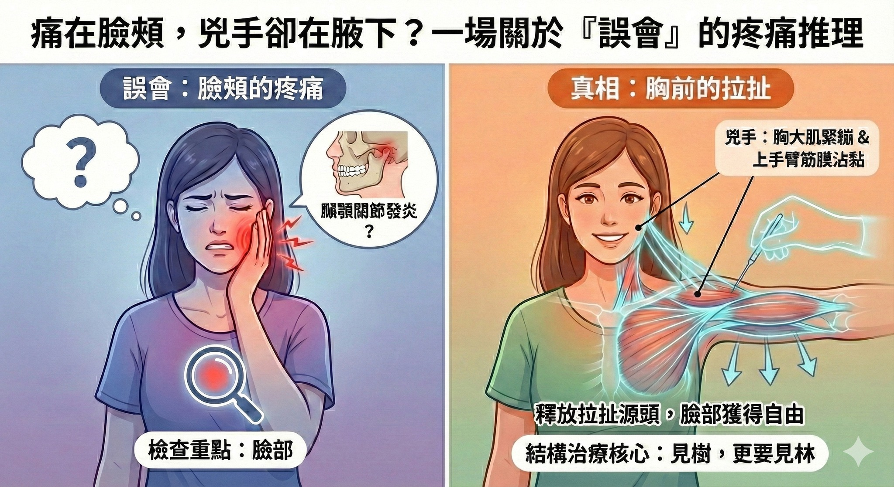

痛在臉頰，兇手卻在腋下？一場關於「誤會」的疼痛推理
【 痛在臉頰，兇手卻在腋下？一場關於「誤會」的疼痛推理 】
「醫師，我去看了專科門診，診斷說是『 #顳顎關節發炎 』。但我的右 #臉頰 跟 #太陽穴 緊到爆炸，嚴重的時候會引發 #偏頭痛 ，連張嘴都覺得好累......」
這週診間來了一位女生，手摀著右臉，眉頭深鎖。
那種緊繃感像是一條看不見的鋼索，死死地勒住她的右臉。為了這張臉，她吃過藥、做過治療，但那種「隨時都想用力咬緊」的感覺卻揮之不去。
-
🔍 案情逆轉：發炎的關節，竟然活動很順暢？
面對這樣的診斷，一般直覺可能會想：既然發炎了，那就讓嘴巴休息、吃消炎藥吧？
但我請她張開嘴巴測試時，發現了一個有趣的現象：
她的顳顎關節活動其實非常「順暢」。
沒有「喀喀」聲，沒有卡住，開合的路徑也很直，嘴巴張開也遠遠超過三指幅的寬度。
這就不合理了。
如果真的是關節內部結構嚴重發炎或損壞，怎麼可能動得這麼順？
這代表，「發炎」只是結果，不是原因。
她的臉頰之所以痛，是因為有股力量在「遠端」偷偷拉扯它。
-
🧶 兇手不在臉上，而在「手臂」與「胸口」
我把視線從她的臉移開，透過雙手的脈象資訊，抑制性訊號非常明顯，於是變開始檢查她的右側身體結構。
果不其然，真正的「兇手」躲在下面：
1. 高位頸椎（C1-C2）鎖死：頭顱的地基歪了。
2. 胸大肌（Pectoralis Major）緊繃：像一條縮短的橡皮筋，把肩膀強力往下拉。
3. 上手臂筋膜（Arm Lines）沾黏：手臂的張力一路連結到頸部。
這是一場身體的拔河比賽。
她的胸口跟手臂（兇手）拚命製造「往下拉」的張力，而她的臉頰與顳顎關節（受害者）為了不被拉走，只好拚命「往上用力繃緊」。
這就是為什麼她會覺得緊繃、很窒息。
✨ 見證奇蹟的時刻
治療過程中，我幾乎沒有去碰她喊痛的臉頰與顳顎關節。
我專注地用乾針與徒手治療的方法，依序鬆開她的右肩頸、胸大肌，甚至一路處理到右上手臂。
當我把那股「向下拉」的力量釋放掉的瞬間......
她驚訝地摸著自己的臉，眼睛瞪得大大的：
「哎喲！很舒服誒！臉頰『鬆開』了，那個緊到爆炸的感覺沒有了！」
-
👨⚕️ 醫師的臨床觀點
這就是結構治療的核心：「見樹，更要見林」。
如果你也被診斷為「顳顎關節發炎」，但吃了藥、戴了咬合板卻改善有限，請試著檢查一下：
- 你的肩膀是不是長期聳肩或圓肩？
- 你的胸口與手臂是不是按下去很痠痛？
很多時候，臉部的發炎只是代罪羔羊。
唯有鬆開拉扯的源頭，上面的臉才能真正獲得自由。
#顳顎關節炎 #TMD #臉部緊繃 #高位頸椎 #胸大肌 #肌筋膜疼痛 #轉移痛 #中醫徒手
太初中醫診所 東門中醫
肌筋膜脈學中醫應用
中醫師 黃彥鈞
---
🔎 實證醫學與延伸閱讀 (References)：
1. Travell, J. G., & Simons, D. G. (1999). Myofascial Pain and Dysfunction: The Trigger Point Manual.
(肌筋膜聖經明確指出：胸鎖乳突肌 (SCM) 與 斜方肌 (Trapezius) 的激痛點，會將疼痛與緊繃感「轉移」至臉頰、眼眶與顳部。這解釋了為何治療肩頸能改善臉部症狀。)
2. Rocabado, M. (1983).
(物理治療大師 Rocabado 證實：頭頸部姿勢 (Head Posture) 會直接改變下顎的休息位置。當頸椎或胸椎張力異常，顳顎關節就會被迫處於高張力狀態，導致發炎與疼痛。)
3. Myers, T. W. (2014). Anatomy Trains.
(解剖列車理論中的「淺前線」與「手臂線」，證實了胸大肌與手臂筋膜的張力，可以透過頸部筋膜一路影響到頭顱與顏面。)
本文案例僅供衛教分享，且已去識別化處理。每位患者的身體結構與發炎成因不同，若有急性紅腫熱痛，仍需配合專科醫師診斷。
